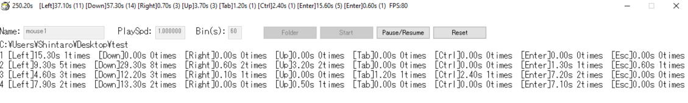

BinTimer
BinTimer is a software to record the time and frequency of keyboard key presses. Use this for the human counting of animal behavior.
How to use
1. Run "BinTimer***.exe" in the BinTimer folder.
2. Enter subject name, playback speed of video you want to measure and time of bins.
3. Select save folder (If default folder is not selected, the result is saved in the Result folder of BinTimer).
4. Press Start. The keys available are arrows, Tab, Ctrl, Enter and Esc keys. The analysis can be paused anytime with Pause/Resume button. The result text file is saved at end of every bin.
5. Click Reset button to clear result for the next subject.

Name: Output file name
PlaySpd: If you are analyzing a video in fast forward playback to save time, set the playback speed (e.g. If double speed playback, set 2).
Bin: Time bin